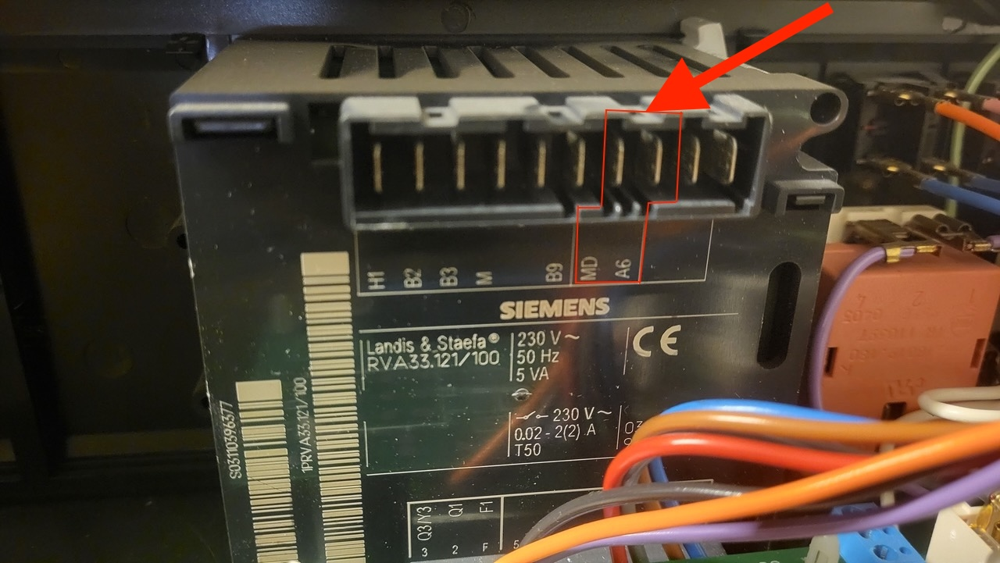

Unterstützte Heizungssysteme
BSB-LAN unterstützt Heizungssysteme, die entweder mit dem BSB (Boiler System Bus), dem LPB (Local Process Bus) oder der PPS (Punkt-zu-Punkt-Schnittstelle) kommunizieren. Diese Steuergeräte werden normalerweise von Siemens hergestellt, bei älteren Geräten kann aber auch noch der Firmenname "Landis & Stafea" oder "Landis & Gyr" auftauchen.
Wir haben eine Liste mit funktionierenden Modellen von verschiedenen Herstellern von Heizungssystemen zusammengestellt, die mit BSB-LAN getestet wurden. Allerdings kann es vorkommen, dass die Hersteller den Modellnamen beibehalten, aber die Steuerung auf ein anderes System umstellen, daher solltest du immer doppelt überprüfen, ob die richtigen Anschlüsse vorhanden sind.
Hier sind ein paar Beispiele von Heizungssteuerungen und den entsprechenden Anschlüssen, die für die Verbindung mit BSB-LAN verwendet werden. Einige Anschlüsse haben drei Pins, andere nur zwei. Wenn drei Pins vorhanden sind, stelle bitte sicher, dass du die richtigen zwei auswählst (CL+ und CL-), da der dritte Pin (G+) für die Hintergrundbeleuchtung der Raumeinheit zuständig ist. Er wird BSB-LAN nicht beschädigen, kann aber verwirrend sein, da die LED von BSB-LAN leuchtet, obwohl es nicht richtig angeschlossen ist.
Übrigens: Wenn du nur einen Anschluss hast und dieser bereits von einer Raumeinheit belegt ist, kannst du BSB-LAN ohne Probleme an den gleichen Anschluss anschließen. Sei nur vorsichtig, wenn du die Drähte für BSB-LAN hinzufügst.
| Steuergerät | Bild | Bemerkungen |
|---|---|---|
| LMS14 LMS15 |
 |
BSB-Anschluss: + = Links - = Mitte |
| LMS14 LMS15 |
 |
BSB-Anschluss: CL+/CL- |
| LMS14 LMS15 Baxi Luna Platinum, Chappee Klista |
   |
BSB-Anschluss: Anschlussklemme M2 Pin 2: CL- Pin 3: CL+ Ausführliche Anweisungen findest du hier für Baxi Luna Platinum. |
| LMU54 LMU64 |
 |
LPB-Anschluss: über zusätzliches OCI420-Plugin, siehe Details unten. |
| LMU74 LMU75 |
 |
BSB-Anschluss: + = Oben - = Mitte LPB-Anschluss: über zusätzliches OCI420-Plugin |
| RVA33 |  | PPS-Anschluss: A6/MD |
| RVA53 |  |
PPS-Anschluss: A6/MD |
| RVA63 |  |
LPB-Anschluss: MB/DB PPS-Anschluss: A6/MD |
| RVD120 |  |
PPS-Anschluss: A6/M |
| RVP54 |  |
PPS-Anschluss: A6/M |
| RVS13 |  |
BSB-Anschluss: CL+/CL- |
| RVS21 |  |
BSB-Anschluss über Stecker X86 + = rechtester Pin - = zweiter Pin von rechts Falls ein Warn-Aufkleber darauf hinweisen sollte, die Pins 2 und 3 zum Anschluss eines Raumgerätes zu verwenden, dann BITTE IGNORIEREN! Diese Pins werden nur zur Stromversorgung des Navilink A59 verwendet, was kein reguläres, kabelgebundenes Raumgerät ist! |
| RVS21 mit AVS55 |  |
AVS55-Erweiterungsmodul, auf RVS21 aufgesetzt. BSB-Anschluss entweder über Stecker X86: + = rechtester Pin - = zweiter Pin von rechts oder über Stecker X150: + = oberster Pin - = zweiter Pin von oben Falls ein Warn-Aufkleber darauf hinweisen sollte, die Pins 2 und 3 zum Anschluss eines Raumgerätes zu verwenden, dann BITTE IGNORIEREN! Diese Pins werden nur zur Stromversorgung des Navilink A59 verwendet, was kein reguläres, kabelgebundenes Raumgerät ist! |
| RVS23 |  |
LPB-Anschluss: LPB/M |
| RVS41 |  |
BSB-Anschluss: CL+/CL- LPB-Anschluss: MB/DB |
| RVS43 LOGON B |
 |
BSB-Anschluss: CL+/CL- LPB-Anschluss: MB/DB |
| RVS46 ISR-ZR1 |
 |
BSB-Anschluss: CL+/CL- LPB-Anschluss: MB/DB |
| RVS46 |  |
BSB-Anschluss: CL+/CL- LPB-Anschluss: MB/DB |
| RVS51 |  |
BSB-Anschluss: CL+/CL- |
| RVS53 |  |
BSB-Anschluss: CL+/CL- |
| RVS61 |  |
BSB-Anschluss: CL+/CL- LPB-Anschluss: MB/DB |
| RVS63 |  |
BSB-Anschluss: CL+/CL- LPB-Anschluss: MB/DB |
| RVS65 |  |
BSB-Anschluss: CL+/CL- LPB-Anschluss: MB/DB |
Konfigurationseinstellungen für OCI420
Es kann etwas knifflig sein, das OCI420 zum Laufen zu bringen, wenn es nicht bereits Teil eines bestehenden LPB-Netzwerks ist. Wenn du das OCI420 zum ersten Mal an deine Heizung anschließt und kein anderes LPB-Heizgerät hast, wirst du wahrscheinlich "Fehler 81" erhalten, was auf einen Busfehler hinweist. Mach dir aber keine Sorgen, es ist wahrscheinlich nur eine Frage der Konfiguration einiger Parameter. Für den LMU64 ist der entsprechende Parameter 604 (LPBKonfig0). Er muss wie folgt eingestellt werden, um BSB-LAN als einziges an das OCI420 angeschlossenes Gerät zu verwenden:
604.0 = 0
604.1 = 1
604.2 = 1
604.3 = 1
604.4 = 1
604.5 = 0
604.6 = 0
604.7 = 0
Dann musst du die LPB-Adresse des OCI420 in den Parametern 605 (muss auf 1 gesetzt werden) und 606 (muss auf 0 gesetzt werden) einstellen. Danach sollte keine Fehlermeldung mehr erscheinen und die rote LED des OCI420 sollte in regelmäßigen Abständen blinken, und du bist bereit, BSB-LAN anzuschließen und zu verwenden.
Achtung: Wenn das OCI420 bereits mit einem anderen LPB-Gerät verbunden ist, nimm hier keine Änderungen vor und verbinde BSB-LAN stattdessen mit dem anderen LPB-Gerät. Es sollte ohne Anpassungen funktionieren.
Liste der funktionierenden Steuergerätemodelle
Es gibt noch viele weitere Steuergeräte, die wahrscheinlich mit BSB-LAN funktionieren. Achte auf diese Siemens-Steuergerätemodelle in deinem Heizungssystem:
AVS37, AVS55, AVS71, AVS74, AVS75, AVS77, AVS79, LMS14, LMS15, LMU54, LMU64, LMU74, LMU75, RVA33, RVA36, RVA43, RVA46, RVA47, RVA53, RVA60, RVA61, RVA63, RVA65, RVA66, RVC32, RVD110, RVD115, RVD120, RVD125, RVD130, RVD135, RVD139, RVD140, RVD144, RVD145, RVD230, RVD235, RVD240, RVD245, RVD250, RVD255, RVD260, RVD265, RVL469, RVL470, RVL471, RVL472, RVL479, RVL480, RVL481, RVL482, RVP340, RVP350, RVP351, RVP360, RVP361, RVP54, RVP5xx, RVS13, RVS21, RVS23, RVS26, RVS41, RVS43, RVS46, RVS47, RVS51, RVS53, RVS61, RVS63, RVS65, RVS68, RWI65, WRI80